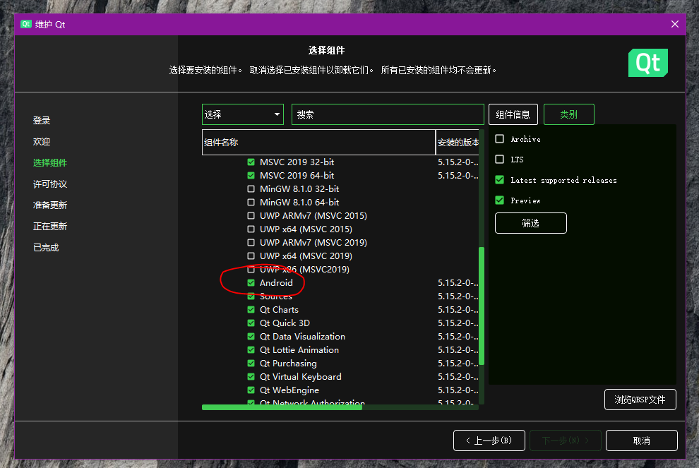
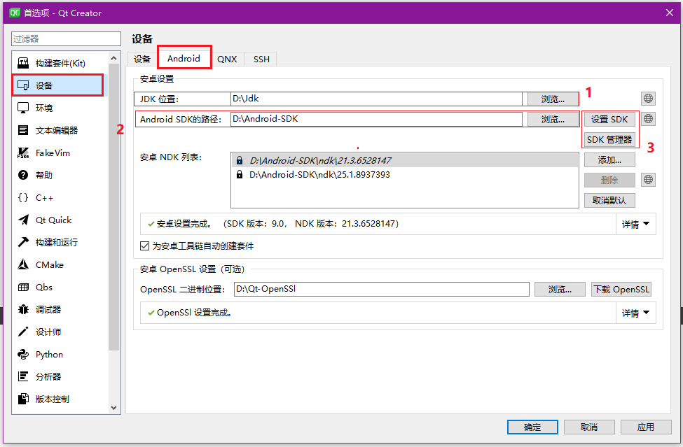
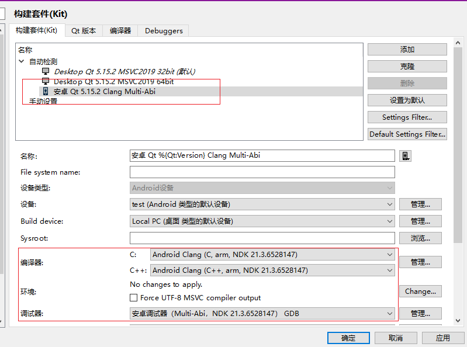
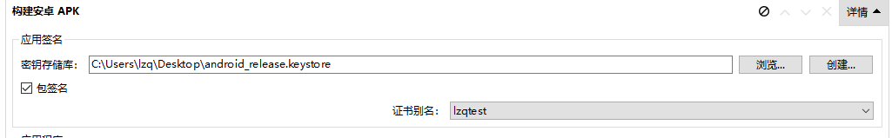
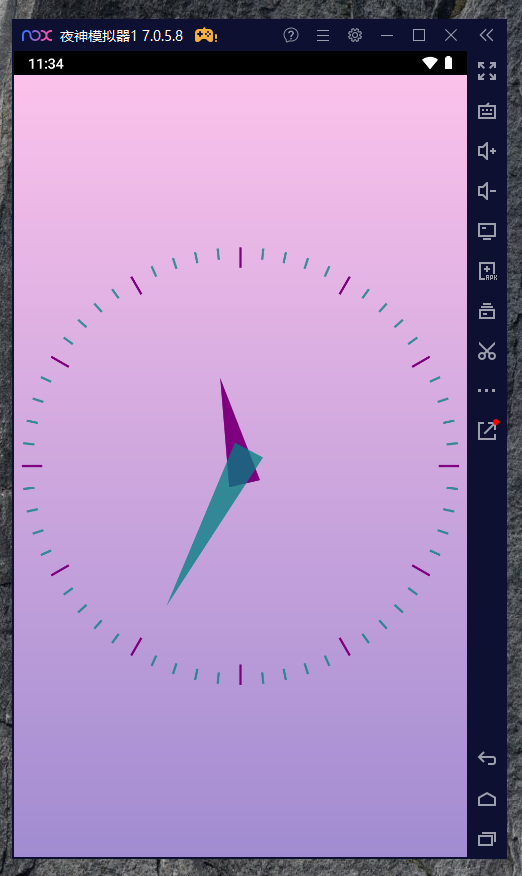

自己想制作一个安卓移动端的程序配合自己的服务端程序使用，结合自己的技术栈(自己只会一些简单的qt和C++),决定使用qt on Andorid。特地记录一下搭建流程。
1. 安卓的开发环境包需要的空间很大,最好不要放在C盘
2. 目录名称不要带空格和中文
我使用的是qt5.15.2版本,但是网上大部分教程都是比较旧的版本,在Android开发环境版本和配置界面上的操作都不太具有参考价值。所以在网上找了很久,终于发现一篇基于5.15.2版本搭建环境的博客。
我搭建的流程也不是和上面博客中一摸一样的,不然也不会花费3天才搞出来,读者注意区分我和其他博客搭建的操作,汲取有用的操作,优化操作步骤。
首先要知道搭建环境都需要什么,这包括qt(安装时勾选了安卓组件)、JDk、SDK、NDK.而且这些都需要保证版本适配,不能太高或者太低,这也是搭建环境的难点。
这一步比较简单,但我也提一句。打开MaintenanceTool.exe工具,安装安卓组件。
这个直接去官网上下载就可以了,这里我用的是jdk-12.0.2_windows-x64_bin`,就是从jdk11版本上下试一试,能用的就先用,后面需要更高的版本就再换。官网下载好像要注册账号才行,注册一个也挺快的,安装也没有特别的,就是选择路径然后next安装。
安装完成后，目录下好像没有jre目录,此时在安装路径下cmd执行命令
新建环境变量
新建环境变量
在环境变量Path里面增加一个
网上很多文章都是要手动下载JDK对应版本的SDK,这里我没有采用这种方法,因为qt界面可以帮助我们下载。打开这个界面的入口主界面菜单【工具】->【外部】->【配置】
看1号框,这里选择我们已经安装过的JDK的路径,然后在2号框选择即将要安装SDK的路径,后面下载的SDK内容都会存在这里。
最后点击3号框中的【设置SDK】按钮,qt会提示你下载需要的包,我这里是可以直接下载的,没有进行其他的网络设置,【SDK管理器】按钮可以让你安装额外的SDK版本,安装完成后,下面的安卓SDK列表会自动添加上,注意记得选择默认SDK版本。
这样基本就OK了,下面是KIT套件设置
需要在【构建设置】页面下的【构建安卓APK】项目下设置应用签名,否则编译出来的apk包是不能成功安装的。这个签名随意设置一下就行，如果是要正经使用的话,另当别论。
随便去qt示例项目下选择一个安卓项目,编译试试,如果出现问题,就需要调整SDK版本了,这个调整版本的操作我就不知了。
这里我没有使用qt自带的模拟器去运行设备,而是将编译出的apk包放到`夜神模拟器`或者真机上运行,我感觉qt的模拟器不好用。夜神模拟器要开发者权限,然后安装运行。
这只是一个简易安卓开发环境的搭建,对我来说目前是够了,如果读者有更好的资源可以在评论分享。
还需要注意的一点是安卓环境还是基于liunx开发,所以可以引用linux的头文件